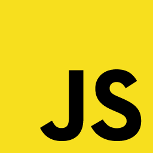

JavaScript. Продолжаем...часть 3
06.08.2019 Как я и думала JavaScript тема обширная, и даже на усвоение базовых навыков уйдет не один день.
Интерактивные курсы пройдены на 87%. До начала обучения 28 дней. В принципе если продвигаться хотя бы на 1% в день, и не филонить, я должна все успеть.
JavaScript. Продолжаем...
05.08.2019Выходные не лучшем образом сказались на моем обучении, так что теперь надо нагнать прогресс.
Разбираюсь в азах javaScript, условия, циклы, масивы и т.д. До применения в вебе еще далеко, так что сайт пока неизменен.
Интерактивные курсы пройдены на 85%. До начала обучения 29 дней.
JavaScript! Наконец.
01.08.2019SVG мне как то не зашло. Вроде и видно что большой потенциал, но инфы в этом курсе, ну ооочень мало, поэтому откладываем в дальнюю коробку к LESS.
И приступаем к JavaScript. Обещают много магии...но сегодня я осилила только знакомство, т.к. день был чертовски утомительным.
Интерактивные курсы пройдены на 80%. До начала обучения ровно месяц. 31 день.
ART-relax или знакомимся с SVG
01.08.2019C LESS как то тема не раскрыта, придется вернуться к ней еще раз позже. А пока знакомимся с SVG. Картинки которые можно нарисовать кодом, ну как то так. Я сегодня весь день рисовала кружочки да квадратики. Звучит проще чем на деле. По SVG впереди еще две темы. Так что завтра продолжу свою ART терапию )
На начало месяца интерактивные курсы пройдены на 75%. А до интенсива все еще месяц...и один день : )
Что за зверь такой?!? LESS.
31.07.2019
Вот и подходит первый месяц моего самообучения к концу. Узнала много, но это крохи. Впереди еще много открытий.
Например сегодня начала читать про LESS. Вроде полезная штука, даже поняла принцип ее работы. Но пока еще непонятно как его использовать. Наверно это будет понятно дальше.
Интерактивные курсы пройдены на 72%. До интенсива остался всего месяц. Успеть бы все.
Приступаем к Flex.
30.07.2019Переделала сайт....опять. Теперь вся раскладка на flex. Хотя его я знаю процентов на 10%.
Для блога тоже немного изменений. Теперь заголовки более осмысленные и добавила картинок, что бы блог был повеселее.
Интерактивные курсы пройдены на 70%. До интенсива остался всего месяц.
День двадцать седьмой:
27.07.2019Добралась до флексов. В сотый раз переделываю сайт. Он у меня в роли подопытной крысы. Но с кадым разом он все больше и больше начинает походить на нормальный сайт.
День двадцать шестой:
26.07.2019Добавила все страницы, половина пустые. Залила немного фоток в портфолио, не в тему правда, ну и ладно. Зато написала слайдер без JavaScript. Хочется уже начать и его учить.
День двадцать пятый:
25.07.2019Переделала вообще весь сайт, в другом дизайне. И все таки я не на дизайнера учусь, а на разработчика интерфесов, так что для начала попрет.
Блогу тоже досталось.
День двадцать третий:
23.07.2019Добавила еще одну страницу на сайт. Правда пока еще не знаю как отправлять последний пост на главную.
День двадцать второй:
22.07.2019Удалила нафиг весь блог. В последствии тут будет только последний пост.
День двадцатый
20.07.2019Много новой информации, в основном css. Немного поменяла дизайн.
День шестнадцатый
16.07.2019Добавила свою мордаху сюда. И уже который день пытаюсб победить селекторы в css.
День тринадцатый
13.07.2019Git уж не кажется таким страшным. Конечно я многого еще не знаю. А еще я заболела (((
День десятый
10.07.2019Git взрывает мой мозг. Его тааак много, что я даже незнаю с какой стороны за него взяться.
День девятый
09.07.2019Немного изменила этот сайт, но все еще жутко топорный) Но я не стою на месте. Продолжаем учиться.
День восьмой
08.07.2019На практике закрепляю разметку сетки. Сегодня изучаю сетки в верстке, и свойства float и clear.
...все еще 8 день. Конец дня. Записалась на три интенсива обучения по frontend. Посмотрела инфу для подготовки к курсу...да уж курс будет интенсивным это точно :) Завтра начну изучать git и githab.
День седьмой
07.07.2019Сегодня изучаю сетки в верстке, и свойства float и clear.Ощущение что я уже месяц сижу и учу html и css, а оказалось всего то неделю.
Все еще думаю куда прикрутить котика)